 Accès exclusif réservé aux 18 ans et plus | Profitez du jeu en ligne avec responsabilité et modération.
L’ARJEL (Autorité de Régulation des Jeux en Ligne) a été créée en 2010 afin de superviser et contrôler l’ouverture du marché des jeux d’argent en ligne en France. Sa mission était d’assurer la protection des joueurs, la lutte contre la fraude, et la transparence des opérateurs agréés.
En 2020, l’ARJEL a été remplacée par l’ANJ (Autorité Nationale des Jeux), qui dispose aujourd’hui de compétences élargies pour garantir un encadrement encore plus strict et moderne du secteur.
L’ANJ est l’organisme public français chargé de réguler l’ensemble des jeux d’argent et de hasard en ligne : paris sportifs, paris hippiques, poker, Bettings en ligne, ainsi que la Française des Jeux (FDJ) et le PMU. Elle contrôle les opérateurs, délivre les agréments, et veille au respect des règles de sécurité, d’équité et de transparence.
Jouer sur un site agréé ANJ vous garantit :
Les sites non agréés sont illégaux en France et présentent des risques accrus : absence de recours, sécurité non garantie, aucune protection en cas de litige.
Un site conforme affiche clairement le logo ANJ et/ou mentionne son agrément sur ses pages. Vous pouvez également vérifier la liste officielle des opérateurs autorisés directement sur le site anj.fr.
NeutralAd ne référence que des sites agréés pour garantir votre sécurité et votre tranquillité d’esprit.
Pour en savoir plus sur la régulation, obtenir de l’aide ou signaler un site illégal :
L’ANJ incarne la sécurité, l’équité et la protection des joueurs français. En choisissant un site agréé et en vous informant via NeutralAd, vous profitez d’une expérience de jeu responsable, transparente et conforme à la loi.
Dernière mise à jour : 25 janvier 2025.
© 2025 NeutralAd France | neutraladvisors.com | Tous droits réservés.